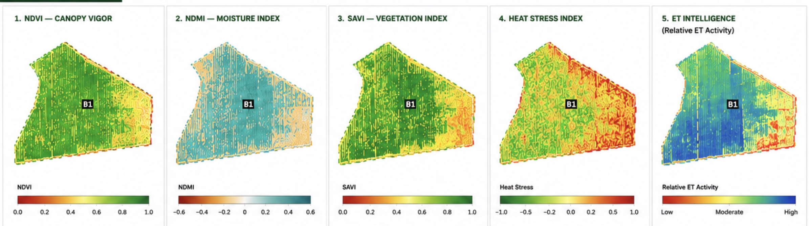

TerraView™ ET Intelligence
Operational Vineyard Water Monitoring from Space Using Sentinel-2

Water is one of the most important variables in viticulture. Too little water can reduce berry size, accelerate canopy stress, and suppress yield. Too much irrigation can dilute fruit quality, increase disease pressure, and waste increasingly expensive water resources. Yet despite its importance, vineyard water dynamics are still often monitored using sparse measurements and manual field observations.
TerraView™ ET Intelligence was built to change that.

Transforming Earth Observation into Vineyard Intelligence
Using freely available Sentinel-2 satellite imagery, SWEEP cloud workflows, and machine learning models, TerraView™ transforms Earth observation data into operational vineyard water intelligence.
The goal is simple: Help growers better understand vineyard water dynamics across entire blocks — from space.
What Is ET?
Evapotranspiration (ET) represents the combined movement of water through:
- Evaporation from soil and surfaces
- Transpiration through plant canopies
ET is closely linked to:
- Plant water use
- Canopy activity
- Vine stress
- Irrigation demand
ET Indicators and What They Tell Us
High ET often corresponds to:
- Active transpiration
- Healthy canopies
- Strong physiological activity
Low ET may indicate:
- Water limitation
- Drought stress
- Canopy decline
- Heat-related stomatal closure
For vineyards, ET patterns can reveal:
- Irrigation variability
- Moisture stress hotspots
- Changing canopy water demand through the growing season
Why Sentinel-2?
One of the most exciting aspects of TerraView™ ET Intelligence is that it uses freely available Sentinel-2 imagery.
Sentinel-2 provides:
- 10–20 m multispectral imagery
- Global coverage
- ~5 day revisit frequency
- Calibrated surface reflectance products
This makes Sentinel-2 extremely powerful for operational vineyard monitoring. For many vineyards, Sentinel-2 provides enough spatial detail to:
- Monitor vineyard blocks
- Quantify canopy vigor
- Estimate moisture dynamics
- Identify spatial stress patterns
Most importantly: Because the imagery is free, TerraView™ can scale operational intelligence workflows without relying entirely on expensive commercial imagery subscriptions.
How TerraView™ ET Intelligence Works
TerraView™ uses SWEEP cloud workflows to automate vineyard ET intelligence generation. The workflow includes:
1. Vineyard Geometry Input
Users upload:
- Vineyard block polygons
- GeoJSON files
- Shapefiles
- Or draw vineyard boundaries directly
2. Sentinel-2 Scene Retrieval
SWEEP automatically:
- Searches Sentinel-2 archives
- Filters cloudy scenes
- Selects high-quality imagery
- Retrieves data for the reporting period
3. Spectral Analysis
TerraView™ computes:
- NDVI (Normalized Difference Vegetation Index)
- NDMI (Normalized Difference Moisture Index)
- NDWI (Normalized Difference Water Index)
- SAVI (Soil-Adjusted Vegetation Index)
- Moisture-related predictors
These layers capture important vegetation and water dynamics.
4. ET Model Inference
Machine learning models estimate relative ET patterns using:
- Multispectral Sentinel bands
- Vegetation indices
- Temporal dynamics
- Canopy moisture indicators
5. Operational Intelligence
The workflow generates:
- ET maps
- Vineyard stress zones
- Block summaries
- Temporal trends
- Management insights
ET Intelligence Is About Patterns
Absolute ET estimation is difficult and often requires:
- Weather stations
- Thermal imagery
- Energy balance models
- Extensive calibration
TerraView™ instead focuses on operational relative ET intelligence.
In practice, growers often care most about:
- Where anomalies exist
- Which blocks differ from the vineyard norm
- How conditions are changing through time
Relative ET intelligence is often far more operationally useful than uncertain absolute estimates.
Heat Waves, Water Stress, and Climate Change
As heat waves become more frequent, vineyard water monitoring is becoming increasingly important. Extreme heat can rapidly alter:
- Transpiration
- Canopy water demand
- Vine physiology
- Moisture stress dynamics
Satellite-derived ET intelligence provides a scalable way to monitor these changes across entire vineyards. TerraView™ can help identify:
- Moisture stress hotspots
- Declining canopy vigor
- Irrigation response variability
- Persistent stress zones during extreme conditions
What Growers Receive
TerraView™ ET deliverables may include:
- ET intelligence maps
- NDVI and moisture summaries
- Vineyard stress indicators
- Temporal ET trends
- Block-level analytics
- Monthly vineyard intelligence reports
Reports are automatically:
- Processed in the cloud
- Rendered into operational dashboards
- Uploaded to S3
- Distributed through automated workflows
Built on SWEEP Cloud Workflows
TerraView™ ET Intelligence is powered by SWEEP.
SWEEP orchestrates:
- Satellite processing
- Raster analytics
- Cloud-native workflows
- Automated report generation
This architecture allows TerraView™ to:
- Scale operational vineyard monitoring
- Automate monthly intelligence products
- Deliver consistent analytics across many vineyards simultaneously
Open Models and Reproducible AI
The TerraView™ ET model is available on Hugging Face.
This includes:
- Model checkpoints
- Inference workflows
- Example notebooks
- Documentation
Check out our Hugging Face repository for the TerraView™ ET Sentinel-2 Model.
The Future of Vineyard Intelligence
TerraView™ ET Intelligence is only the beginning.
Future workflows may integrate:
- Sap flow sensing
- Distributed microclimate monitoring
- Berry counting
- Irrigation optimization
- ET forecasting
- AI-assisted vineyard recommendations
The long-term vision is a vineyard intelligence platform that combines:
- Earth observation
- Field sensing
- AI
- Cloud workflows
into a unified operational decision-support system.
🌱 TerraView™
See More. Know More. Grow Better.
Operational vineyard intelligence powered by Sentinel-2, machine learning, and SWEEP cloud workflows.
Aji John
CEO @ Dotmote Labs